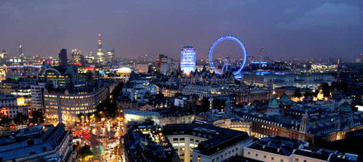

Londres est une destination touristique qui fait rêver le monde entier depuis plusieurs siècles. Son dynamisme, son Histoire, les habitants… Il est aussi très facile de s’y rendre, que ce soit grâce à l’Eurotunnel, avec le ferry ou en avion, la capitale est bien desservie.
Autrefois populaires, les quartiers situés à l’Est de la ville sont devenus branchés. Fréquentés par la jeunesse londonienne avec des œuvres d’art aux murs illustrant le dynamisme créatif qui règne à Londres. Nouveau quartier branché de la capitale, Shoreditch situé juste derrière la City abrite son marché vintage, ses musiciens de rues et ses stands de street food. Shoreditch est le quartier emblématique du street art à Londres avec ses fresques, pochoirs, collages, couleurs et styles.
Aux côtés de New York, Londres est l’une des villes du monde où il est possible de goûter au plus grand nombre de cuisine d'ailleurs. Le magazine National Geographic a décerné à la capitale britannique le prix de « la meilleure ville culinaire ». Selon le jury, le célèbre Borough Market, l'Hand and Flowers - le seul pub aux deux étoiles au guide Michelin en Angleterre - ou encore les fish and chips du Golden Hind font, entre autres, pourront ravir les papilles des curieux gastronomes.
Londres rime aussi avec pubs dans l’esprit des français. Et on ne se lasse pas d’y aller tant l’ambiance est agréable. Idéal pour profiter de la vie nocturne et faire connaissance avec les londoniens.
Peu importe quels sont vos goûts, vous pourrez être sûr de trouver un quartier qui vous plaira à Londres. Les atmosphères y sont très différentes, entre le Notting Hill chic, Camden Town alternatif, Soho branché, Brixton afro-antillaise ou le Mayfair luxueux, vous avez le choix !
Londres est une destination touristique qui fait rêver le monde entier depuis plusieurs siècles. Son dynamisme, son Histoire, les habitants… Il est aussi très facile de s’y rendre, que ce soit grâce à l’Eurotunnel, avec le ferry ou en avion, la capitale est bien desservie.
Les parcs londoniens sont impressionnants par leur taille. Le Hyde Park par exemple s’étend sur 140 hectares mais on retrouve beaucoup d’autres espaces verts, très agréables lorsqu’il fait beau, pour y faire du sport, se promener ou pour le plaisir d’être au vert.
Pour suivre les traces d’Harry Potter, Ron et Hermione plusieurs lieux sont incontournables : la Gare de King's Cross avec sa célèbre voie 9 ¾, le quartier de la City de Londres qui abrite des lieux de tournage : la banque de Gringotts, qui est en réalité l'ambassade d’Australie mais aussi le fameux chemin de traverse, tourné à "Leadenhall Market", un marché couvert. La visite pour les fans de la saga serait incomplète sans un passage aux studios Warner Bros Harry Potter, permettant de découvrir l'envers du décor comme nulle part ailleurs.
À Londres, il faut respecter les traditions. Une théière remplie de thé Earl Grey fumant, des scones à la crème et à la confiture et des gâteaux savoureux : rien de plus « British » qu’un Afternoon Tea à Londres. La ville propose de nombreux types de salons de thé allant du plus traditionnel au plus insolite. Et il y en a pour tous les goûts. Les après-midi thé les plus connus : le Dorchester ou le salon de thé Fortnum & Mason...
C’est au Freemasons' Tavern, lors de la création de la Fédération d'Angleterre de football, le 26 octobre 1863, que les règles précises du football ont été établies. Un séjour à Londres est l’occasion de voir jouer les clubs de Chelsea et Arsenal et de visiter leurs stades respectifs Stamford Bridge et l’Emirates Stadium : à ne pas manquer !
L'idée d'un séjour à Londres peut être l’occasion de croiser le prince Harry ou Meghan Markle dans un de leurs lieux favoris. Depuis Buckingham Palace, site incontournable à visiter, il faut traverser Hyde Park pour se rendre à Kensington Palace, où on a parfois la chance d’apercevoir le duc et de la duchesse de Cambridge ainsi que leur 3 bambins royaux.

A 200 km de Londres, le festival de Glastonbury dans le Somerset, appelé officiellement Glastonbury Festival of Contemporary Performing Arts, est un festival de musique et d'art du spectacle. Chaque année, 175 000 personnes qui débarquent le temps du week-end pour écouter les plus grands noms de la musique, parmi lesquels les Rolling Stones, Jay-z et Coldplay ces dernières années. Par ailleurs, keep your eyes open, en plus de sa programmation exceptionnelle, on peut y croiser des célébrités, des musiciens et même des membres de la famille royale. Le prince Harry y a été vu en 2013… Festival respectueux de l’environnement, tous les 6 ans, le festival est suspendu afin de laisser la terre au repos, ce qui permet la reconstruction de la fertilité du sol.